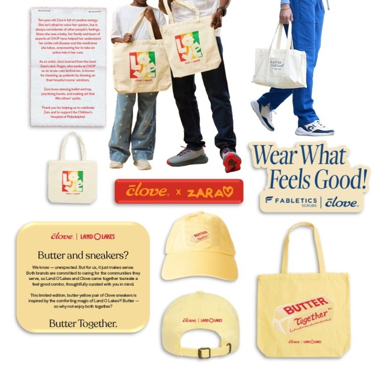

Collaboration launches I sourced, from vendor discovery to sampling and cost negotiation.

I build AI‑driven workflow and quality systems from the ground up: vendor QA frameworks, production automation pipelines, wholesale pricing operations. Most of them start as something a person was doing by hand.
A Deloitte consulting background gives me structured rigor for ambiguous problems; three years inside a scaling brand taught me to launch, own, and staff the operation end to end.
Automation is never the point on its own. The point is giving the team back the hours to spend on work that actually needs a person.
Tools & Stack
Languages Python, SQL, JavaScript, HTML, CSS
Build Node.js, Railway, Shopify Admin API, REST / Webhooks
Ops Systems Shopify, Extensiv WMS, QuickBooks Online, EDI (SPS Commerce), Rithum · QVC
B.S. Informatics, Indiana University Bloomington
Deloitte → Clove Brand Inc.